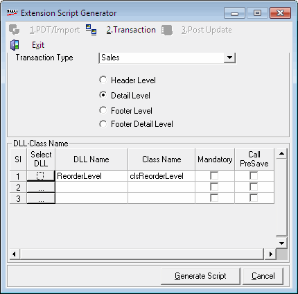

The template Transaction helps you to generate scripts for pre-update extensions enabled at different levels (Header/ Detail/ Footer levels) in the existing transactions to capture any extra information.
On selecting 2.Transaction tab, the relevant details captured are displayed.

Transaction Type: Select the transaction type in which the extension is to be enabled. The transactions that support capturing information at different levels are listed in the drop down.
Header Level: Select, if the extension is to be enabled at the Header level of the transaction type selected.
Detail Level: Select, if the extension is to be enabled at the Detail level of the transaction type selected.
Footer Level: Select, if the extension is to be enabled at the Footer level of the transaction type selected.
Footer Detail Level: Select, if the extension is to be enabled at the Footer Detail level of the transaction type selected. This option is available only if the transaction type selected is Sales.
DLL-Class Name: This grid gives the details of DLLs used to enable the extension.
Select DLL: Click to select the required DLL
DLL Name: The name of the selected DLL is displayed
Class Name: The Class name of the selected DLL is displayed
Mandatory: Select, if the DLL is mandatory to enable the extension
Call PreSave: Select, if the DLL is to be called before saving the transaction
Generate Script: To generate the script
Cancel: To cancel the selections made